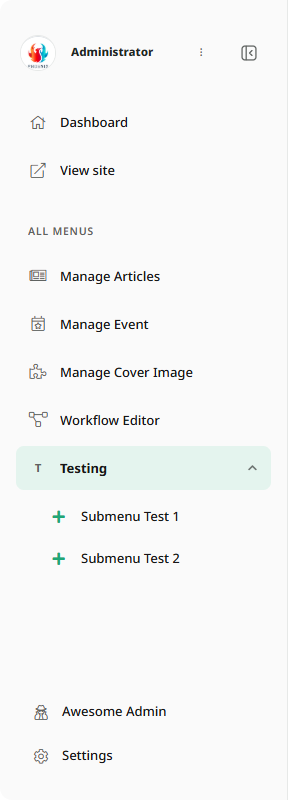
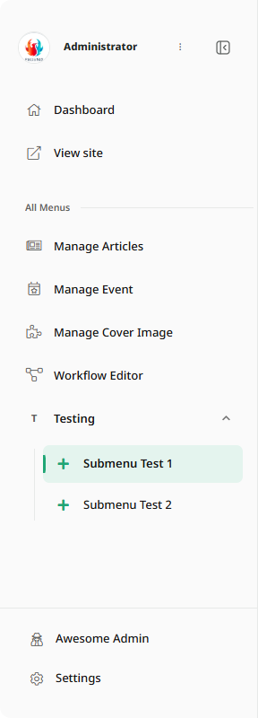
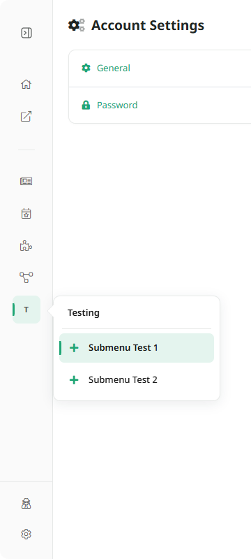

Alternatif sidebar Lucent
Identitas tetap sama, dengan kategori dan posisi halaman aktif yang lebih jelas.
01 · Preview sebelumnya
Kategori dan submenu yang sudah Anda sukai.

02 · Rekomendasi saya
Label kategori lebih tenang; halaman aktif memiliki penanda sendiri.

03 · Saat sidebar dilipat
Induk menu tetap ditandai; posisi hover dan panah mengikuti koreksi Anda.
